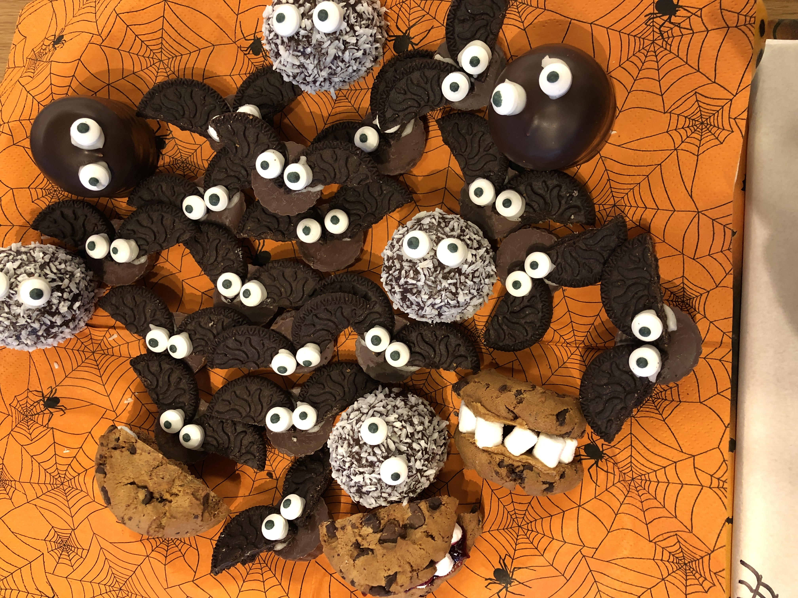

Hobbys
Mit vier Kindern, Haushalt, Arbeit und dem Kurs beim Coding Campus bleibt eigentlich nicht sehr viel Zeit für Hobbies.
Ich lese sehr gerne, wenn möglich englische Literatur. In den letzten Monaten bin ich auf englische Hörbücher umgestiegen. So muss ich unterwegs, beim Autofahren oder wenn ich im Haushalt etwas mache nicht auf meine Bücher verzichten.

Im Winter gehe ich so oft wie möglich mit den Kindern Schifahren, Snowboarden oder Eislaufen.

Ausserdem koche ich sehr gerne, teste immer wieder neue Rezepte und freue mich, wenn ich etwas Veganes entdeckt habe, das allen schmeckt. Mir ist es wichtig gesund zu kochen und ich versuche so gut es geht unsere Mahlzeiten aus frischen Zutaten zuzubereiten. Ausnahmen, wie zum Beispiel Halloween, bestätigen die Regel ;-)


